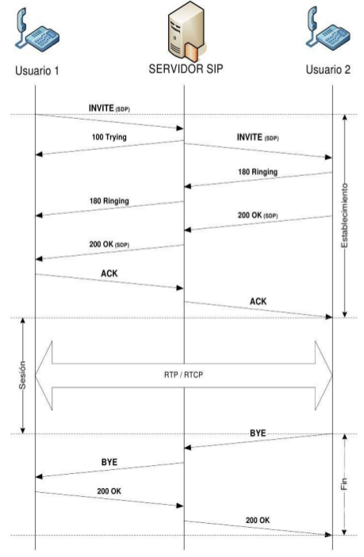
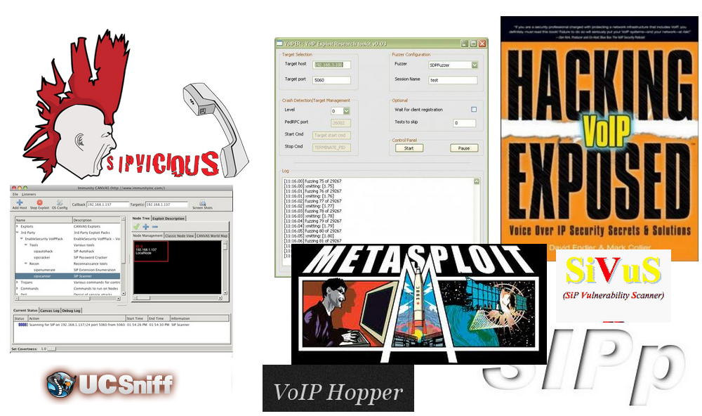

VoIP pentesting with Bluebox-ng

About
Jesús Pérez
- FIC
- VoIP developer/Security Engineer (Quobis - Vigo) (Past)
- Front-end developer (Freelance - USA)
- @jesusprubio
Damián Franco Álvarez
- ETSE
- VoIP developer / Front-end developer (Quobis - Vigo)
- @pamojarpan
Contents
- VoIP
- SIP k ase!
- Funny scenarios
- VoIP security
- Bluebox-ng beta
- Bluebox-ng 2.0
VoIP
VoIP - Intro
- VoIP = Voice over IP
- UC = Unified Communications
- Main protocols

VoIP - SIP
Signaling
- User location
- User availability
- Session establishment
- Session management
VoIP - SIP Requests
- REGISTER
- INVITE
- MESSAGE
- CANCEL
- ACK
- BYE
VoIP - SIP Responses
- 180 Ringing
- 200 OK
- 401 Unauthorized
- 404 Not found
- 486 Busy here
VoIP - SIP Registering flow

VoIP - SIP Call flow

VoIP - Systems
VoIP - RFCs

SIP k ase! - SIP Entities

SIP k ase! - IMS
Funny scenarios - Prison
Funny scenarios - NASA
Funny scenarios - Department of Defense

VoIP security - Fraud cases
- 1 month -> 60.000 $
- 1/2 day -> 23.000 " and 15.000 $
- 46 hours -> 11.000 calls and 120.000 $
- 500.000 calls -> 1.000.000 $
- Shadow Comunications
- 1.500.000 calls
- 11.000.000 euros
- 42 individuals
VoIP - Attack Vectors

VoIP - Security Tools

Bluebox-ng beta
- Bluebox-ng is a GPL VoIP/UC vulnerability scanner
- CoffeeScript and Node.js
- Our 2 cents to help to improve information security practices in this kind of environments
- Bad design and scaling problems
- https://github.com/jesusprubio/bluebox-ng
Bluebox-ng beta - Screenshoot

Bluebox-ng - auto
Bluebox-ng 2.0
- CoffeeScript
- Redesigned
- Auto
- Reports
- Error detection
- Web interface (¿?)
- SIP Fuzzing (¿¿??)
- NoFlo
Bluebox-ng 2.0 - NoFlo

Bluebox-ng 2.0 - Call for developers
References
- Bluebox-ng - https://github.com/jesusprubio/bluebox-ng
- Quobis Whitepaper - "Riegos actuales de la VoIP"
- Personal SIP Metasploit modules - https://github.com/jesusprubio/metasploit-sip/
- UCSniff - http://ucsniff.sourceforge.net/
- VoIPHopper - http://voiphopper.sourceforge.net/
- VoIPer - http://voiper.sourceforge.net/
- SIPp - http://sipp.sourceforge.net/
- SIPVicious - https://code.google.com/p/sipvicious/
References
- Viproy VoIP - http://viproy.com/voipkit/
- D. Endler, M. Collier. Hacking VoIP Exposed http://www.hackingvoip.com
- G. G. Peña, "DoS, a practial approach" - http://dosis.kung-foo.net/dos-rooted-print-EN-03.pdf
- Roberto Blesa Sierra, "Agente SIP embebido para establecimiento de sesiones VoIP y mensajería instantánea" - http://upcommons.upc.edu/pfc/bitstream/2099.1/6191/1/memoria.pdf
- RFC 3261 SIP, "Session Initiation Protocol" - http://www.ietf.org/rfc/rfc3261.txt
- ExploitSearch - http://www.exploitsearch.net/
- SHODAN - http://www.shodanhq.com/
Thanks
Jesús Pérez
- @jesusprubio
Damián Franco Álvarez
- @pamojarpan